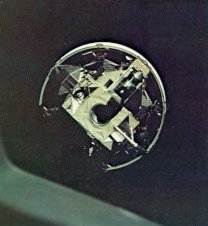
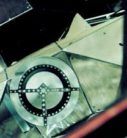

|  | Its legs folded up for launch, the lunar module looked like this as the command module eased in to dock and draw it free from the third stage of the Saturn launch vehicle. |
|  | An offset docking target on the LM lined up with the pilot's window on the CSM if align- ment was right. Then an array of powerful latches locked the two spacecraft together. |